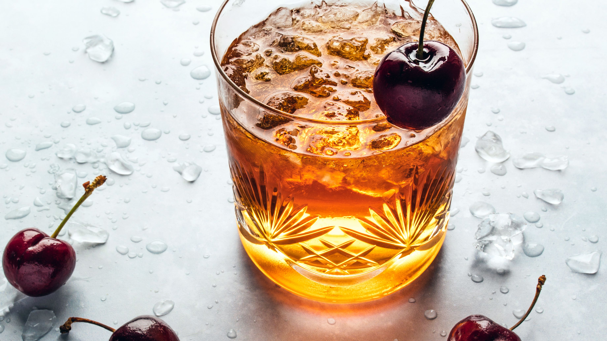

Vieux Carré

Cocktail from 1930 New Orleans. Similar to a Manhattan, but more complex
Ingredients
- 3/4 ounce rye whiskey
- 3/4 ounce cognac
- 3/4 ounce sweet vermouth
- 1 to 2 dashes Angostura bitters
- 1 to 2 dashes Peychaud's bitters
- 1/2 ounce Bénédictine liqueur
- Chery or lemon twist, garnish
Steps
- Gather the ingredients
- Combine the rye whiskey, cognac, sweet vermouth, bitters, and Bénédictine in a mixing glass filled with ice
- Stir well
- Strain into an old-fashioned glass with ice
- Garnish with a cherry or lemon twist